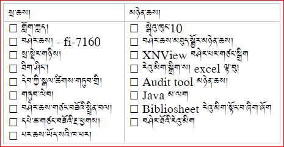
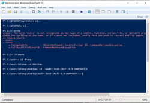
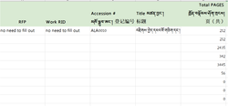

འོག་ཏུ་བྲིས་བའི་མཁོ་ཆས་རིགས་ཀྱི་ཐོ་གཞུང་ནི་བཤེར་འབེབས་པའི་ཨང་བསྒྱར་ལས་གཞི་ལ་མེད་དུ་མི་རུང་བ་ཡིན། གཤམ་ལ་སྲ་ཆས་དང་མཉེན་ཆས་རིགས་གཉིས་སུ་དབྱེ་ནས་སྲ་ཆས་རིགས་བེད་སྤྱོད་བྱེད་ཕྱོགས་དང་། མཉེན་ཆས་ཀྱི་རིགས་ཡིན་ན་ཕབ་ལེན་དང་ནང་འཇུག་ཇི་ལྟར་བྱེད་དགོས་མིན་སོགས་ཀྱི་སྐོར་ནས་ངོ་སྤྲོད་ཐུང་ཙམ་རེ་བྱེད།

ཨང་བསྒྱུར་ལས་རིམ་གྱི་མགོ་ནས་མཇུག་བར་དུ་བཤེར་འབེབས་དང་། པར་གཅོད་གཏུབ། རྣམ་སྒྲིག་བརྗེ་སྒྱུར། ཆེ་ཆུང་བཟོ་བ་སོགས་ལ་ངེས་བར་དུ་མཁོ། གློག་ཀླདལ་ངེས་བར་སྒེའུ་ཁུང་10མཉེན་ཆས་མ་ལག་ཡོད་དགོས།
Fijitsu fi-7160 བཤེར་ཆས་འདི་རྩིས་འཕྲུལ་ལ་མཐུད་ནས་དཔེ་ཆ་བཤེར་འབེབས་དང་བཤེར་པར་ཞིབ་འཇུག་བཅས་འདི་བརྒྱུད་ནས་བྱེད་དགོས་པ་ཡིན། འདི་དག་ཚང་མ་རྩིས་འཕྲུལ་དང་འབྲེལ་དགོས་དུས་རྩིས་འཕྲུལ་དང་བཤེར་ཆས་གཉིས་མཐུད་སྦྱོར་བྱེད་པའི་མཉེན་ཆས་འདི་རྩིས་འཕྲུལ་ནང་ཕབ་ལེན་བྱེད་དགོས།
དགོས་ངེས་སྙི་ཆས་འདི་ལ་རིགས་གསུམ་ཡོད་དེ་(TWAIN) (ISIS) (ScandALL PRO) འདི་དག་རྩིས་འཕྲུལ་ནང་ཕབ་ལེན་བྱེད་ཚུལ་གཉིས་ཡོད་མོད། གཤམ་དུ་བཀོད་པའི་ང་ཚོའི་དྲ་སྦྲེལ་ནས་ཐད་ཀར་རེ་རེ་བཞིན་ཕབ་ལེན་བྱེད་ཐུབ་པ་ཡིན། འོག་གི་སྙི་ཆས་གོ་རིམ་བཞིན་ཕབ་ལེན་དང་ནང་འཇུག་བྱེད་དགོས། སྙི་ཆས། | -- | | | |
མཉེན་ཆས་ནང་འཇུག་བྱེད་སྟངས།
བཤེར་པར་ཞིབ་འཇུག་གི་མགོ་གཞུག་ཀུན་ཏུ་XNView མཉེན་ཆས་འདི་བཀོལ་དགོས་པས། ཐོག་མར་ཁྱེད་ཀྱི་གློག་ཀླད་ནང་མཉེན་ཆས་འདི་ངེས་པར་ཕབ་ལེན་བྱེད་དགོས། མཉེན་ཆས་འདིའི་དྲ་ཚིགས་ལ་གཟིགས་འདོད་ཚེ་འདིར་སྣུན། གཤམ་ནས་རང་གི་གློག་ཀླད་ཀྱི་རིགས་དང་མཐུན་པའི་XNView མཉེན་ཆས་ཕབ་ལེན་བྱོས།
སྒེའུ་ཁུང་གློག་ཀླད་ནང་ཕབ་ལེན། | ཀུ་ཤུ་རྟགས་ཅན་ནང་ཕབ་ལེན་། | -- | -- | | |
མཉེན་ཆས་ནང་འཇུག་བྱེད་སྟངས།
ཨང་བསྒྱུར་དང་བཤེར་འབེབས་ཀྱི་ལས་རིམ་ཁྲོད་བཤེར་ཐོ་འགོད་པ་དང་། དཔེ་བསྐྲུན་གནས་ཚུལ་སོགས་ཐོ་འགོད་བྱེད་པར་excelསྙི་ཆས་ངེས་པར་དུ་མཁོ།
སྤུས་ཚད་བལྟ་འདོམས་མཉེན་ཆས་འདི་ནི་ནང་བསྟན་དཔེ་ཚོགས་ལྟེ་གནས་ཀྱི་ཨང་བསྒྱུར་ལས་རིམ་ལ་དམིགས་ཏེ་བཟོས་བ་ཞིག་ཡིན། མཉེན་ཆས་འདིའི་བྱེད་ལས་ནི་བཤེར་འབེབས་བྱས་རྗེས་མཁོ་སྒྲུབ་ཨང་ལྡན་གྱི་པར་སྣོད་ནང་དུ་མ་ཕྱི་པར་སྣོད། ཉར་ཚགས་པར་སྣོད། དྲ་སྤེལ་པར་སྣོད། དཔེ་བསྐྲུན་གནས་ཚུལ་སོགས་ནང་བསྟན་དཔེ་ཚོགས་ལྟེ་གནས་ཀྱི་ཨང་བསྒྱུར་ཚད་གཞི་དང་མཐུན་མིན་བལྟ་བྱེད་ཡིན། མཉེན་ཆས་འདིས་མིའི་ལས་ཀ་མང་པོ་ཞིག་ཉུང་དུ་བཏང་ཡོད། མཉེན་ཆས་ལ་རམ་འདེགས་མཉེན་ཆས་Javaངེས་པར་དུ་དགོས།

མཉེན་ཆས་ཕབ་ལེན།| -----| audit tool|
མཉེན་ཆས་འདི་སྤུས་ཚད་བལྟ་འདོམས་མཉེན་ཆས་ལ་རམ་འདེགས་བྱེད་པར་མཁོ་བའི་མཉེན་ཆས་ཞིག་ཡིན། སྤུས་ཚད་བལྟ་འདོམས་མཉེན་ཆས་ནང་འཇུག་མ་བྱས་སྔོན་ལ་མཉེན་ཆས་འདི་ཕབ་ལེན་བྱས་ནས་ནང་འཇུག་བྱེད་དགོས། མཉེན་འདི་ནི་རིན་མེད་དང་དྲ་རྒྱའི་སྒང་ནས་ཐད་ཀར་ཕབ་ལེན་བྱེད་ཐུབ། འོག་གི་དྲ་ཐག་བརྒྱུད་ནས་ཀྱང་ཕབ་ལེན་བྱེད་ཐུབ།
མཉེན་ཆས་ཕབ་ལེན། | -----| Java|
མཉེན་ཆས་ནང་འཇུག་བྱེད་སྟངས།
འགེངས་ཤོག་འདི་ནི་བཤེར་འབེབས་སྐབས་བཤེར་འབེབས་པ་དང་། དཔེ་ཆའི་རྩོམ་པ་པོ། དཔེ་བསྐྲུན་བྱེད་གནས། དཔེ་ཆའི་གནས་སྟངས་སོགས་གནས་ཚུལ་རྒྱས་པ་འབྲི་ས་ཞིག་ཡིན། དཔེ་ཆ་རེ་རེ་ལ་འགེངས་ཤོག་འདི་ངེས་བར་དུ་རྒྱངས་དགོས།

འགེངས་ཤོག་རེའུ་མིག་ཕབ་ལེན། | -----| Bibliographic info sheet|
བཤེར་ཐོའི་རེའུ་མིག་ནི་བཤེར་འབེབས་མ་བྱས་པའི་སྔོན་ལ་དཔེ་ཆ་གང་དང་གང་བཤེར་འབེབས་བྱེད་དགོས་པ་སོགས་ཀྱི་ཐོ་གཞུང་ཞིག་ཡིན། བཤེར་འབེབས་པས་ཐོ་གཞུང་འདི་གཞིར་བཞག་ནས་དཔེ་ཆ་རྣམས་བཤེར་འབེབས་བྱེད་དགོས།
འགེངས་ཤོག་རེའུ་མིག་ཕབ་ལེན། | -----| Scanning list table|